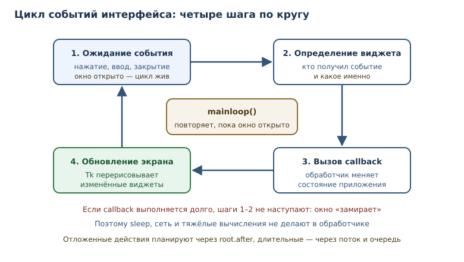
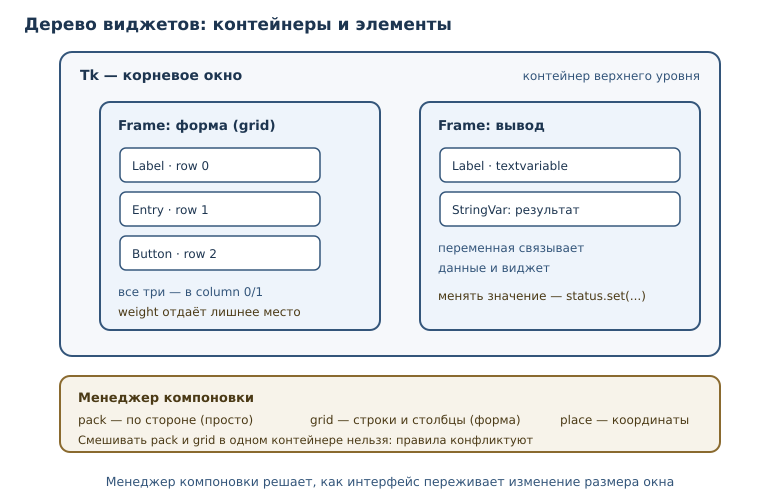

Графический интерфейс на tkinter
Окна, виджеты, компоновка, события и первое настольное приложение на стандартной библиотеке.
В этой главе
До сих пор программы общались с человеком через терминал: напечатал команду — получил строку. Это удобно для инструментов и автоматизации, но не для приложений, которыми пользуются обычные люди. Им нужны окна, кнопки, поля ввода и мгновенная реакция на действия.
Приложение с графическим интерфейсом — программа, которая взаимодействует с человеком через окна, кнопки и другие элементы управления, а не через терминал. В Python такой интерфейс можно собрать без установки сторонних библиотек: tkinter входит в стандартную библиотеку. Это не самый современный инструмент, зато доступный сразу, кроссплатформенный и достаточный для учебных и служебных приложений.
55.1 Что вы сможете после этой главы
К концу главы вы соберёте небольшое настольное приложение и поймёте, как оно устроено внутри. Вы сможете:
- открывать окно и размещать в нём элементы управления;
- выбирать виджет под задачу и связывать его с данными;
- раскладывать интерфейс через менеджер компоновки и объяснять, как он ведёт себя при изменении размера окна;
- подписываться на события и писать обработчик события (callback);
- отделять логику от интерфейса, чтобы её можно было тестировать без окна.
55.2 Зачем нужен GUI и когда он не нужен
Графический интерфейс нужен, когда пользователь работает с программой интерактивно и многократно: вводит данные, видит результат, меняет настройки. Консоль остаётся лучше для автоматизации, скриптов и серверных задач: там нет человека, который нажимает кнопки.
У tkinter есть сильные и слабые стороны. Он входит в стандартную библиотеку, работает на Windows, macOS и Linux, не требует сборки и хорошо подходит для прототипов, внутренних инструментов и учебных проектов. При этом внешний вид зависит от системы, сложные анимации и современный дизайн делать неудобно, а для больших интерфейсов чаще выбирают другие библиотеки. Для первой настольной программы tkinter — разумный старт: те же идеи (виджеты, компоновка, события) есть и в других фреймворках.
Отдельно стоит сказать про веб-интерфейсы: они удобны, когда программой пользуются с разных устройств и её нужно обновлять централизованно. Настольное приложение выигрывает, когда нужен доступ к локальным файлам, оборудованию или работа без сети. Выбор между ними — вопрос условий эксплуатации, а не моды.
55.3 Минимальное окно
Любая программа на tkinter начинается с корневого окна. Затем задаются заголовок и размер, добавляются элементы, и запускается цикл событий интерфейса — цикл, который ждёт действий пользователя и вызывает зарегистрированные обработчики, пока окно открыто.
import tkinter as tk
root = tk.Tk()
root.title("Первое окно")
root.geometry("320x200")
root.mainloop()
Разберём строки. Tk() создаёт корневое окно и связанный с ним интерпретатор
Tk. title задаёт заголовок, geometry — размер в пикселях. mainloop
передаёт управление циклу событий: программа не завершается, пока окно не
закрыто. Без mainloop окно может появиться на мгновение и исчезнуть —
типичная ошибка новичка.
$ python app.py
Команда запускает приложение; окно открывается, и терминал «замирает», пока цикл событий работает. Это нормально: программа ждёт действий пользователя, а не бездействует.

55.4 Виджеты
Виджет — элемент интерфейса: кнопка, поле ввода, метка, список, холст; имеет состояние и реагирует на события. Все виджеты создаются как дочерние элементы окна или контейнера и настраиваются параметрами.
| Виджет | Для чего |
|---|---|
Label |
показать текст или изображение |
Button |
выполнить действие по нажатию |
Entry |
ввести одну строку |
Text |
ввести и показать многострочный текст |
Listbox |
выбрать элемент из списка |
Checkbutton |
включить или выключить признак |
Radiobutton |
выбрать один вариант из нескольких |
Scale |
выбрать число ползунком |
Frame |
сгруппировать другие виджеты |
import tkinter as tk
root = tk.Tk()
root.title("Витрина виджетов")
tk.Label(root, text="Введите имя:").pack(anchor="w")
name = tk.Entry(root)
name.pack(fill="x")
tk.Checkbutton(root, text="Запомнить меня").pack(anchor="w")
tk.Scale(root, from_=0, to=100, orient="horizontal").pack(fill="x")
tk.Text(root, height=3).pack(fill="both", expand=True)
listbox = tk.Listbox(root, height=4)
for item in ("первый", "второй", "третий"):
listbox.insert("end", item)
listbox.pack(fill="both")
tk.Button(root, text="Готово", command=root.destroy).pack(pady=8)
root.mainloop()
Обратите внимание на command=root.destroy: кнопка закрывает окно и
завершает цикл событий. Это минимальный, но полноценный интерфейс.
Списки и многострочный текст
Listbox хранит набор строк, а не отдельные виджеты. Элементы добавляют
методом insert, удаляют по индексу, а выбранный индекс получают через
curselection. Если нужен выбор нескольких элементов, включают
selectmode="extended".
listbox = tk.Listbox(root, selectmode="extended")
listbox.insert("end", "первая задача")
listbox.insert("end", "вторая задача")
selected = listbox.curselection()
for index in selected:
print(listbox.get(index))
Text устроен сложнее: это не просто строка, а документ с индексами вида
"1.0" (строка и символ). Чтение всего содержимого — text.get("1.0", "end-1c"),
вставка — text.insert("end", "новая запись"). Индекс end-1c означает «конец
без последнего перевода строки», который Tk добавляет автоматически.
Переменные интерфейса
Значения полей удобно хранить не в самом виджете, а в переменной Tkinter:
StringVar, IntVar, BooleanVar, DoubleVar. Виджет связывается с ней
через textvariable, а программа читает и меняет значение через переменную.
status = tk.StringVar(value="готово")
tk.Label(root, textvariable=status).pack()
status.set("выполняется")
Такой подход разделяет данные и представление: логика работает со значениями,
а интерфейс сам обновляется при изменении переменной. Для полей ввода это
избавляет от ручного чтения entry.get() в каждом обработчике.
55.5 Компоновка
Создать виджет мало — нужно указать, где он находится. Менеджер компоновки —
механизм размещения виджетов в окне: pack, grid, place; определяет, как
интерфейс переживает изменение размера.
| Менеджер | Как работает | Когда удобен |
|---|---|---|
pack |
укладывает виджеты друг за другом по стороне | простые панели, вертикальные списки |
grid |
ставит в ячейки таблицы (строка, столбец) | формы, сетки кнопок, почти весь интерфейс |
place |
задаёт абсолютные координаты и размер | редкие случаи точного позиционирования |
grid обычно лучше: он описывает структуру, а не координаты. При изменении
размера окна ячейки растягиваются по правилам weight, а виджеты
прижимаются к краям через sticky.
import tkinter as tk
root = tk.Tk()
root.title("Форма на grid")
root.columnconfigure(1, weight=1)
tk.Label(root, text="Имя:").grid(row=0, column=0, sticky="w", padx=8, pady=6)
tk.Entry(root).grid(row=0, column=1, sticky="ew", padx=8, pady=6)
tk.Label(root, text="Город:").grid(row=1, column=0, sticky="w", padx=8, pady=6)
tk.Entry(root).grid(row=1, column=1, sticky="ew", padx=8, pady=6)
tk.Button(root, text="Отправить").grid(row=2, column=0, columnspan=2, pady=10)
root.mainloop()
Как grid переживает изменение размера
Правила растяжения задаются для строк и столбцов, а не для отдельных
виджетов. columnconfigure(1, weight=1) говорит: лишнее место отдаётся
второму столбцу, поэтому поля ввода растягиваются, а подписи остаются
компактными. Аналогично rowconfigure распределяет лишнюю высоту.
sticky управляет положением виджета внутри ячейки: "w" прижимает влево,
"ew" растягивает по горизонтали, "nsew" — по обеим осям. padx и pady
добавляют внешние отступы, а ipadx и ipady — внутренние. Без weight
окно при растяжении оставит всё содержимое в углу: свободное место просто не
распределяется.
sticky="ew" растягивает виджет по горизонтали, columnspan=2 объединяет
ячейки. Смешивать pack и grid в одном контейнере нельзя: Tkinter не сможет
согласовать их правила — интерфейс зависнет или выдаст ошибку.

55.6 События и обработчики
Интерфейс реагирует на события: нажатие кнопки, ввод текста, движение мыши, закрытие окна. Обработчик события (callback) — функция, которую интерфейс вызывает при событии; не должна блокировать цикл событий надолго.
Есть два способа подписки. command связывает действие с кнопкой или
командым виджетом и вызывает функцию без аргументов. bind подписывает на
конкретное событие и передаёт объект event.
import tkinter as tk
root = tk.Tk()
root.title("События")
status = tk.StringVar(value="нажмите кнопку")
def on_click() -> None:
status.set("кнопка нажата")
def on_key(event: tk.Event) -> None:
status.set(f"нажата клавиша {event.keysym!r}")
tk.Label(root, textvariable=status).pack(padx=12, pady=8)
tk.Button(root, text="Нажми", command=on_click).pack(pady=4)
root.bind("<Key>", on_key)
root.mainloop()
У объекта события есть полезные поля: widget (кто получил событие), char
(введённый символ), keysym (имя клавиши), x и y (координаты указателя).
Через bind строят горячие клавиши, обработку <Return>, <Escape> и
движения мыши.
Закрытие окна и диалоги
Когда пользователь нажимает крестик, Tk генерирует событие закрытия. Его
можно перехватить и, например, спросить подтверждение или сохранить данные:
root.protocol("WM_DELETE_WINDOW", on_close). Обработчик сам решает, вызвать
ли root.destroy().
Стандартная библиотека даёт готовые диалоги: tkinter.messagebox для
сообщений и подтверждений, tkinter.filedialog для выбора файлов,
tkinter.simpledialog для ввода значения. Они не требуют отдельных
зависимостей, но выглядят по-разному на разных системах.
from tkinter import filedialog, messagebox
def choose_file() -> None:
path = filedialog.askopenfilename(title="Выберите файл")
if path:
messagebox.showinfo("Выбрано", path)
Диалоги блокируют вызывающий код до ответа пользователя, но не цикл событий: Tk продолжает обрабатывать события, пока окно диалога открыто.
Правило: не блокировать цикл событий
Цикл событий однопоточный: пока выполняется обработчик, окно не перерисовывается
и не реагирует на ввод. Поэтому в обработчике нельзя делать долгие операции:
time.sleep, сетевые запросы, тяжёлые вычисления. Окно «зависнет» — не потому,
что программа сломалась, а потому, что цикл занят.
# Плохо: окно замрёт на пять секунд
def on_slow_click() -> None:
import time
time.sleep(5)
# Лучше: отложенное действие через after
def on_click() -> None:
status.set("подождите…")
root.after(1000, lambda: status.set("готово"))
root.after(мс, функция) планирует вызов в цикле событий, не блокируя его.
Для длительной работы с сетью или файлами используют отдельный поток, но
виджеты обновляют только в главном потоке: Tkinter не потокобезопасен.
Рабочий шаблон — поток складывает результат в queue.Queue, а главный поток
периодически проверяет очередь через after.
55.7 Состояние приложения: модель отдельно от интерфейса
Самая полезная привычка при работе с GUI — не смешивать правила предметной области с кнопками. Модель ничего не знает про окна: это обычные функции и классы, которые можно запустить и проверить в терминале. Интерфейс лишь вызывает модель и показывает результат.
KM_PER_MILE = 1.609344
def km_to_miles(kilometers: float) -> float:
return kilometers / KM_PER_MILE
def miles_to_km(miles: float) -> float:
return miles * KM_PER_MILE
def format_distance(value: float, digits: int = 2) -> str:
return f"{value:.{digits}f}"
print(format_distance(km_to_miles(10)))
print(format_distance(miles_to_km(26.2), 1))
assert km_to_miles(0) == 0
assert round(km_to_miles(1.609344), 6) == 1
assert round(miles_to_km(1), 6) == 1.609344
assert format_distance(1.005, 2) == "1.00" or format_distance(1.005, 2) == "1.01"
print("тесты модели прошли")
6.21
42.2
тесты модели прошли
Последняя проверка намеренно осторожна: поведение округления чисел с плавающей точкой зависит от двоичного представления, и опираться на конкретную цифру в учебном тесте не стоит. Проверять нужно то, что действительно входит в контракт функции.
55.8 Пример: конвертер единиц
Соберём приложение целиком: поле ввода, переключатель направления, кнопка и результат. Модель — уже написанные функции; интерфейс — тонкая оболочка.
import tkinter as tk
KM_PER_MILE = 1.609344
def km_to_miles(kilometers: float) -> float:
return kilometers / KM_PER_MILE
def miles_to_km(miles: float) -> float:
return miles * KM_PER_MILE
def parse_distance(text: str) -> float:
cleaned = text.strip().replace(",", ".")
if not cleaned:
raise ValueError("введите расстояние")
try:
value = float(cleaned)
except ValueError as exc:
raise ValueError(f"не число: {text!r}") from exc
if value < 0:
raise ValueError("расстояние не может быть отрицательным")
return value
class ConverterApp:
def __init__(self, root: tk.Tk) -> None:
self.root = root
self.mode = tk.StringVar(value="km_to_miles")
self.input_text = tk.StringVar()
self.result_text = tk.StringVar(value="—")
tk.Label(root, text="Расстояние:").grid(row=0, column=0, sticky="w", padx=8, pady=6)
tk.Entry(root, textvariable=self.input_text).grid(
row=0, column=1, sticky="ew", padx=8, pady=6
)
tk.Radiobutton(
root, text="километры → мили", variable=self.mode,
value="km_to_miles",
).grid(row=1, column=0, sticky="w", padx=8)
tk.Radiobutton(
root, text="мили → километры", variable=self.mode,
value="miles_to_km",
).grid(row=2, column=0, sticky="w", padx=8)
tk.Button(root, text="Перевести", command=self.convert).grid(
row=3, column=0, columnspan=2, pady=8
)
tk.Label(root, textvariable=self.result_text).grid(
row=4, column=0, columnspan=2, pady=6
)
root.columnconfigure(1, weight=1)
def convert(self) -> None:
try:
value = parse_distance(self.input_text.get())
except ValueError as error:
self.result_text.set(f"Ошибка: {error}")
return
if self.mode.get() == "km_to_miles":
self.result_text.set(f"{km_to_miles(value):.2f} мили")
else:
self.result_text.set(f"{miles_to_km(value):.2f} км")
def main() -> None:
root = tk.Tk()
root.title("Конвертер расстояний")
ConverterApp(root)
root.mainloop()
if __name__ == "__main__":
main()
Здесь важно всё, о чём говорилось выше: модель (km_to_miles, parse_distance)
не зависит от Tkinter и тестируется отдельно; StringVar связывает данные
с полями; grid задаёт форму; command подписывает кнопку на метод, а не на
голую функцию — так у обработчика есть доступ к состоянию приложения.
Проверка ошибок стоит в обработчике, потому что она относится к вводу
пользователя, а не к математике.
55.9 Типичные ошибки
- Не вызван
mainloop. Окно появляется и сразу исчезает; программа завершается, не дождавшись действий пользователя. - Забыт менеджер компоновки. Виджет создан, но не показан: без
pack,gridилиplaceон не попадает в окно. - Смешаны
packиgridв одном контейнере. Tkinter не может согласовать правила; интерфейс зависает или падает с ошибкой. - Блокирующий обработчик.
sleep, долгий запрос или тяжёлый цикл в callback замораживают окно: цикл событий не может обработать следующий ввод. - Работа с виджетами из другого потока. Tkinter не потокобезопасен; обновлять интерфейс должен главный поток, а фоновый — передавать данные через очередь.
- Логика внутри обработчиков. Когда правила предметной области размазаны
по
command-функциям, их нельзя протестировать и трудно менять. - Абсолютные координаты через
place. Интерфейс ломается при другом размере шрифта или окна;gridиpackпереживают изменения лучше.
55.10 Как тестировать GUI-логику без окна
Главный приём — вынести правила в чистые функции и классы, как в конвертере. Тогда тесты не открывают окно и работают в обычном терминале.
def parse_distance(text: str) -> float:
cleaned = text.strip().replace(",", ".")
if not cleaned:
raise ValueError("введите расстояние")
try:
value = float(cleaned)
except ValueError as exc:
raise ValueError(f"не число: {text!r}") from exc
if value < 0:
raise ValueError("расстояние не может быть отрицательным")
return value
for raw in ["10", " 2,5 ", "-1", "abc"]:
try:
print(repr(raw), "→", parse_distance(raw))
except ValueError as error:
print(repr(raw), "→ ошибка:", error)
'10' → 10.0
' 2,5 ' → 2.5
'-1' → ошибка: расстояние не может быть отрицательным
'abc' → ошибка: не число: 'abc'
Если нужно проверить сам интерфейс, используют root.update() и проверяют
состояние виджетов без mainloop. Но такие тесты медленные и хрупкие; их
держат отдельно и в небольшом количестве. Основная масса проверок должна
относиться к модели.
Есть и практическая причина: на сервере без графической среды окно не создаётся вовсе, и тест падает с ошибкой подключения к дисплею. Поэтому GUI-тесты помечают и пропускают, если дисплей недоступен, а логику проверяют всегда. Хороший признак архитектуры — возможность запустить 90 % тестов, не открывая ни одного окна.
55.11 Упражнения
1. Минимальное окно
Напишите программу, которая открывает окно 400×300 с заголовком «Мой первый
GUI», добавляет метку «Привет» и кнопку «Закрыть», завершающую приложение.
Объясните, что произойдёт, если убрать mainloop().
2. Витрина виджетов
Создайте окно с Label, Entry, Checkbutton и Button. По нажатию кнопки
метка показывает текст из поля ввода. Опишите, какие параметры виджетов
понадобились и зачем.
3. Модель счётчика
Реализуйте класс CounterModel с методами increment(), decrement() и
reset(). Значение не должно уходить ниже нуля. Проверьте поведение в
терминале, без окна.
4. Форма на grid
Соберите форму «Имя — Email — Кнопка» через grid. Подписи прижаты к левому
краю, поля растягиваются. Объясните, что делает columnconfigure и
sticky.
5. Обработчик и событие
Подпишите окно на событие <Return> и на нажатие кнопки. Оба обработчика
должны менять одну и ту же переменную StringVar. Опишите разницу между
command и bind.
6. Валидация ввода
Реализуйте функцию parse_percent(text: str) -> float, которая принимает
число от 0 до 100, понимает запятую как разделитель и поднимает ValueError
с понятным сообщением для остальных случаев. Проверьте пять вариантов ввода.
7. Модель списка задач
Реализуйте класс TaskList с методами add(title), toggle(index) и
visible(). Пустой заголовок — ошибка; неверный индекс — IndexError.
Проверьте сценарий из трёх задач.
8. Не блокировать цикл
Дан обработчик, который вызывает time.sleep(3) и обновляет метку.
Объясните, что увидит пользователь, и перепишите обработчик так, чтобы окно
не замирало. Используйте after.
9. Конвертер температуры
Реализуйте чистые функции celsius_to_fahrenheit и fahrenheit_to_celsius,
а затем опишите, как подключить их к окну с полем ввода и переключателем.
Проверьте функции тестами, включая точку −40.
10. Мини-проект: приложение «Заметки»
Спроектируйте приложение: поле ввода, кнопка «Добавить», список заметок и
кнопка «Удалить выбранную». Разделите модель и интерфейс: модель — класс с
методами add, remove, items; интерфейс — окно, виджеты и обработчики.
Реализуйте и протестируйте модель в терминале, а интерфейс опишите кодом в
неисполняемом блоке.
55.12 Проверка понимания
- Чем приложение с графическим интерфейсом отличается от консольной программы и когда каждое уместно?
- Что делает
mainloopи почему без него окно не живёт? - Чем
pack,gridиplaceотличаются и почемуgridчаще выбирают? - Чем
commandотличается отbind? - Почему долгий обработчик «подвешивает» окно и как этого избежать?
- Зачем разделять модель и интерфейс?
- Почему Tkinter нельзя обновлять из фонового потока и какой шаблон используют вместо этого?
55.13 Что дальше
Настольное приложение готово, но данные в нём пока живут только в памяти. Следующая глава — о визуализации данных: как превращать числа в понятные графики и не обманывать читателя. О стандартной библиотеке говорилось в главе 34, о файлах и сохранении данных — в главе 19, о тестах модели — в главе 32.